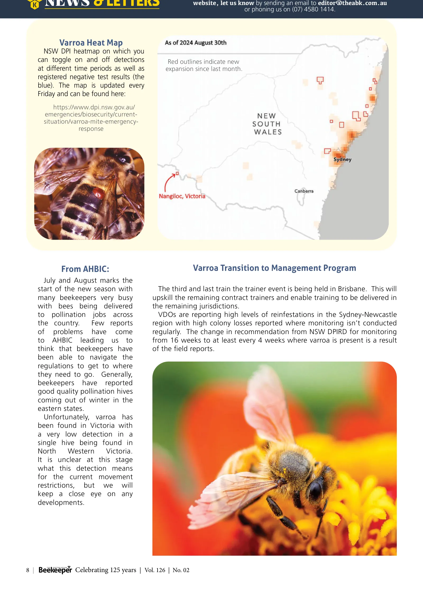

website, let us know by sending an email to editor@theabk.com.au
or phoning us on (07) 4580 1414.
NEWS & LETTERS
From AHBIC:
July and August marks the
start of the new season with
many beekeepers very busy
with bees being delivered
to pollination jobs across
the country. Few reports
of
problems
have
come
to AHBIC leading us to
think that beekeepers have
been able to navigate the
regulations to get to where
they need to go. Generally,
beekeepers
have
reported
good quality pollination hives
coming out of winter in the
eastern states.
Unfortunately, varroa has
been found in Victoria with
a very low detection in a
single hive being found in
North
Western
Victoria.
It is unclear at this stage
what this detection means
for the current movement
restrictions,
but
we
will
keep a close eye on any
developments.
Varroa Transition to Management Program
The third and last train the trainer event is being held in Brisbane. This will
upskill the remaining contract trainers and enable training to be delivered in
the remaining jurisdictions.
VDOs are reporting high levels of reinfestations in the Sydney-Newcastle
region with high colony losses reported where monitoring isn’t conducted
regularly. The change in recommendation from NSW DPIRD for monitoring
from 16 weeks to at least every 4 weeks where varroa is present is a result
of the field reports.
Varroa Heat Map
NSW DPI heatmap on which you
can toggle on and off detections
at different time periods as well as
registered negative test results (the
blue). The map is updated every
Friday and can be found here:
https://www.dpi.nsw.gov.au/
emergencies/biosecurity/current-
situation/varroa-mite-emergency-
response
Red outlines indicate new
expansion since last month.
8 |
Celebrating 125 years | Vol. 126 | No. 02